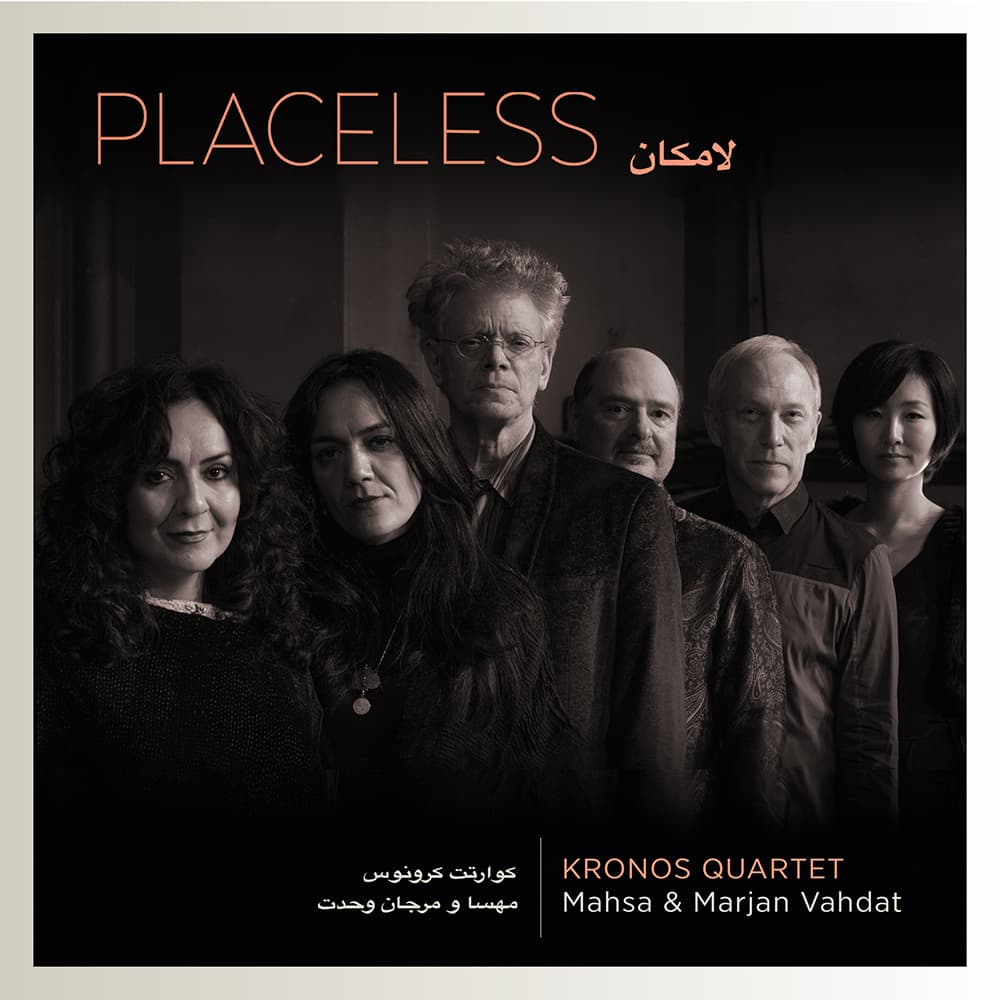

Back to discography

PLACELESS
Mahsa & Marjan Vahdat, Kronos Quartet
Kirkelig Kulturverksted, 2019
Recorded in Oslo’s Kulturkirken Jakob, the album features 14 songs composed by Mahsa Vahdat to classical poems by Hafez and Rumi and the works of contemporary Iranian poets.